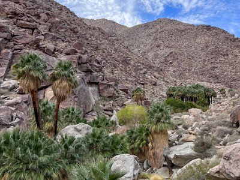
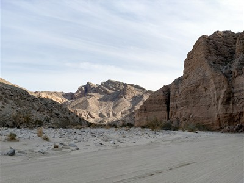
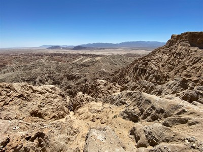
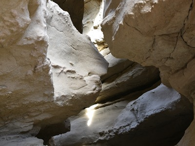
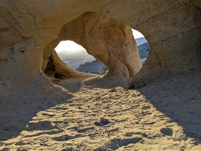
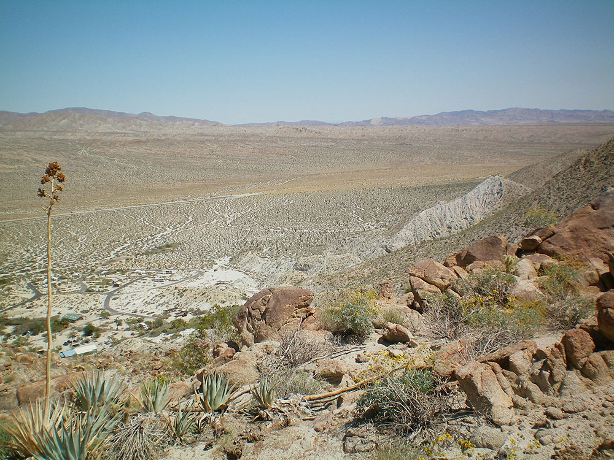
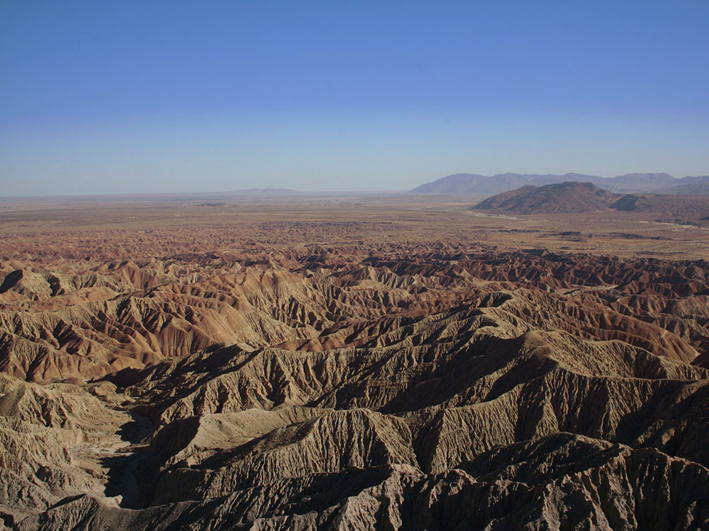

Vast desert preserve featuring rugged badlands, palm oases, wildflower blooms, and expansive wilderness landscapes that support diverse wildlife and outdoor recreation.
Visitor Center: 9am to 5pm (October through May)
Some facilities may have seasonal hours or closures
Day-use parking (select areas): about $10 per vehicle
Camping fees apply depending on site and facilities
How to Get There
From Borrego Springs (3 mi): Take Palm Canyon Drive south toward the visitor center, following park entrance signs along CA‑78 and surrounding desert access roads.
Overview
Anza-Borrego Desert State Park is the largest state park in California, protecting roughly 650,000 acres of the Colorado Desert in eastern San Diego County. Established in 1932 and named for the Spanish explorer Juan Bautista de Anza and borrego, the Spanish word for bighorn sheep, it is made up of sunken badlands, dry lake beds, rugged mountain ridges and palm-filled canyons. The park has about 500 miles of dirt roads, around 110 miles of hiking trails and 12 designated wilderness areas, and it shelters a population of endangered Peninsular bighorn sheep. It is best known for its winter and spring wildflower blooms, hidden palm oases and viewpoints such as Font’s Point, and it was designated an International Dark Sky Park in 2018, making it one of the best places for stargazing in Southern California.
Access
The park surrounds the small desert town of Borrego Springs, roughly 90 miles northeast of San Diego, and nearly all visitors arrive by car. Highways S22 and CA-78 are the main routes from the east and west, S2 enters from the south off Interstate 8, and CA-79 and CA-78 lead in from San Diego County. The visitor center sits at the west end of Palm Canyon Drive in Borrego Springs. Many of the park’s best sights, including Font’s Point, the Wind Caves and Blair Valley, are reached by dirt roads, and California State Parks notes that most dirt roads require all-wheel-drive or four-wheel-drive vehicles, with some areas needing high clearance. Cell coverage is limited or absent in much of the park, so carry extra water, fuel and supplies, and check road conditions at the visitor center before heading out.
Seasons
Fall, winter and early spring are the main visiting seasons, with mild days and cool nights that are ideal for hiking and camping. Wildflowers typically bloom from late winter into spring, with timing and intensity depending on winter rainfall, and in wet years the desert floor fills with color. Summer is extremely hot, with daytime temperatures reaching as high as 125°F, so most visitors stay away and hiking is only safe at dawn. Several campgrounds, including Tamarisk Grove, Vern Whitaker Horse Camp and Sheep Canyon, close from June through September, and the visitor center cuts back to weekends and holidays in summer. Occasional summer thunderstorms can cause flash floods in canyons and washes, so avoid narrow canyons if storms are in the forecast.
Things to Do
Visit Font's Point
Font's Point is one of the park's most iconic viewpoints, offering sweeping panoramas of the Borrego Badlands. Often called the "Grand Canyon of California," the overlook is especially popular at sunrise and sunset when the desert landscape glows with rich colors.
Hike Through The Slot
The Slot is one of California's most famous slot canyon hikes. Carved by flash floods over thousands of years, the narrow sandstone walls create a unique hiking experience as visitors pass through twisting passages and dramatic desert formations.
Explore Borrego Palm Canyon
Borrego Palm Canyon is one of the park's most popular trails, leading hikers through a sandy desert wash to a lush oasis of native California fan palms. Along the route, visitors may spot desert birds, seasonal wildflowers, and even bighorn sheep on surrounding hillsides.
Discover the Galleta Meadows Sculptures
The Borrego Springs area features more than 100 giant metal sculptures created by artist Ricardo Breceda. These impressive works depict prehistoric animals, mythical creatures, desert wildlife, and a famous 350-foot serpent that appears to emerge from the desert floor.
Explore the Wind Caves
The Wind Caves are fascinating sandstone formations shaped by wind erosion over time. A short hike leads visitors to these unusual formations, which provide excellent photography opportunities and impressive views of the surrounding badlands.
Drive the Desert Backroads
Hundreds of miles of dirt roads and washes lead to remote sections of the park. Visitors with high-clearance or four-wheel-drive vehicles can access scenic badlands, hidden canyons, overlooks, and geological formations that are inaccessible from paved roads.
View Seasonal Wildflowers
Following favorable winter rains, the desert can transform into a colorful landscape filled with wildflowers such as sand verbena, desert sunflowers, and poppies. These spring blooms attract visitors from around the world and create one of North America's most spectacular desert flower displays.
Top Trails
Borrego Palm Canyon Trail
Length: Approximately 3 miles round trip
Elevation Gain: Approximately 450 feet
Difficulty: Easy to Moderate
This popular trail leads through a scenic desert canyon to a palm oasis. Hikers can see native plant species, desert wildlife, and one of the park's most famous natural attractions.
The Slot Trail
Length: Approximately 2.2 miles loop
Elevation Gain: Minimal
Difficulty: Moderate
The Slot provides an exciting journey through narrow canyon passages carved by flash flooding. It is one of the most unique hiking experiences in the park and a favorite among photographers.
Wind Caves Trail
Length: Approximately 1.25 miles round trip
Elevation Gain: Approximately 250 feet
Difficulty: Easy to Moderate
This short hike climbs through desert terrain to unusual sandstone formations filled with naturally eroded openings and caves created by wind and weather.
Hellhole Canyon Trail
Length: Approximately 5.5 miles round trip
Elevation Gain: Approximately 1,300 feet
Difficulty: Moderate to Strenuous
One of the park's most rewarding hikes, Hellhole Canyon leads to a remote palm oasis and seasonal waterfall while showcasing classic desert scenery.
Panoramic Overlook Trail
Length: Approximately 1 mile round trip
Elevation Gain: Approximately 300 feet
Difficulty: Easy
A short climb near the visitor center rewards hikers with expansive views of Borrego Valley, surrounding mountains, and the desert landscape.
Visitor Centers
The Anza-Borrego Desert State Park Visitor Center is at the west end of Palm Canyon Drive in Borrego Springs. It offers exhibits on the desert’s geology, wildlife and cultural history, maps and trail information, a bookstore run by the Anza-Borrego Foundation, and staff who can advise on road conditions and wildflower bloom. It is open daily from 9:00 AM to 5:00 PM from October through May, and on a reduced schedule (weekends and holidays) from June through September. Call (760) 767-4205 for current hours.
Camping and Lodging
The park has developed campgrounds, including Borrego Palm Canyon, Tamarisk Grove, Bow Willow and Vern Whitaker Horse Camp, along with primitive campgrounds such as Mountain Palm Springs, Sheep Canyon and Fish Creek. Reservations are available through ReserveCalifornia, and some sites close in summer. Backcountry camping is also allowed in much of the park under park rules. The town of Borrego Springs is the main base for lodging, with resorts and inns such as La Casa del Zorro and Borrego Valley Inn, along with RV parks, a few restaurants and groceries. Other lodging options within about 1.5 to 2 hours include Julian, Ramona, Temecula and the Coachella Valley cities of Indio and Palm Desert.
Sources: California State Parks and Visit California official information describing Anza-Borrego Desert State Park's landscapes, Font's Point, Borrego Palm Canyon, wildflower displays, wildlife viewing opportunities, and remote desert recreation.
https://www.visitcalifornia.com/things-to-do/anza-borrego-desert-state-park/
Additional visitor information covering The Slot, Wind Caves, Font's Point, desert driving routes, badlands exploration, stargazing opportunities, and hiking trails throughout Anza-Borrego Desert State Park.
https://www.earthtrekkers.com/one-day-in-anza-borrego-desert-state-park/
This article uses material from Wikipedia, Britannica, and official park resources for Anza‑Borrego Desert State Park, which are released under the Creative Commons Attribution-Share-Alike License 3.0. Additional information from California State Parks.
Featured Locations and Trails

Stan Shebs, CC BY-SA 3.0, via Wikimedia Commons; Image Size Adjusted

Borrego Palm Canyon Trail
Scenic desert hiking route leading through a sandy canyon to a lush palm oasis with seasonal pools and opportunities to spot wildlife.
Scenic desert hiking route leading through a sandy canyon to a lush palm oasis with seasonal pools and opportunities to spot wildlife.

"Mike" Michael L. Baird, CC BY 2.0, via Wikimedia Commons; Image Size Adjusted

Fish Creek Trail
Remote desert trail traversing a wide sandy wash through dramatic badlands with layered rock formations and expansive open views.

Stan Shebs, CC BY-SA 3.0, via Wikimedia Commons; Image Size Adjusted

Font's Point
Panoramic desert overlook offering sweeping views of eroded badlands, rugged mountains, and expansive valleys shaped by ancient geological forces.

Stan Shebs, CC BY-SA 3.0, via Wikimedia Commons; Image Size Adjusted
The Slot
Narrow canyon passage featuring smooth rock walls, winding corridors, and dramatic desert geology shaped by flash floods over time.

Stan Shebs, CC BY-SA 3.0, via Wikimedia Commons; Image Size Adjusted
Wind Caves
Natural sandstone formations shaped by wind erosion, forming hollowed chambers and openings within rugged desert cliffs.


